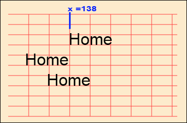
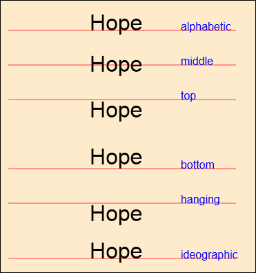

HTML5 Canvas - Text Alignment
Ongoing HTML5 Canvas Tutorial: 1 2 3 4 5 6 7 8 9 10 11 12 13 14 15
You can specify an alignment for your HTML5 canvas fonts. This is done with the textAlign property. You can use left, right or center (there's also a start and end, but we won't discuss these as they are almost the same as left and right). The default is left. So you don't need to add an alignment value unless you want something other than left:
canvas_context.textAlign = "right";
Text alignment is based on the X value of your fillText method. As an example, take a look at the image below:

The blue line shows that the X value for the text "Home" is at 138 pixels from the left of the canvas (the X position). The first one is left-aligned. The one in the middle is right-aligned. This means the last letter of "Home" will start at 138. The final one is centre-aligned. The code for this is:
canvas_context.fillStyle = "black";
canvas_context.font = "24pt Arial";
canvas_context.textAlign = "center";
canvas_context.fillText("Home", 138, 160);
(Note the American spelling of "center", you Brits!)
Text Baseline
You can also specify a text baseline. The default is alphabetic, meaning the bottom of the text in the roman alphabet. The letters that go below the roman alphabetic baseline are lowercase g, j, p, q, and y. Other values you can have for the baseline are: middle, top, bottom, hanging, ideographic.
To set a text baseline you use the textBaseline property:
canvas_context.textBaseline = "top";
Here's what all the baselines look like in a browser.

Note where the red lines are in the image above. The top one is the default. The others are shown in relation to this baseline. So if you specified middle then this would make your text jump up a bit.
In the roman alphabet, there's not much difference between the alphabetic and ideographic positions. Likewise, top and hanging are just about the same.
In the next part, we'll take a look at drop shadows and the HTML5 canvas.